Faces 4 Files 7 Angles 2:1 · 4:3 · 1:2 · 1:1 Size ≈ 26 KB
Nebula
Faces drawn for the language instead of borrowed for it, all from one stroker and the eagle's four angles: square ends, no curves, and a bowl is a box with its corners cut, because the system has no radius. Nebula Wordmark is the logo, Nebula Mono the chrome voice, Nebula Display the one big word, Nebula Icons the pictures in the labels. Space Grotesk stays the voice a person reads.
The faces 4
lucya
systems
Archive
418 frames
lucya
404
The logo face drawn from the mark
Nebula Wordmark is set beside the eagle, so it is drawn from the eagle. The mark has four angles and nothing else, and the face uses only those: 2:1, the tail diamond and the steep wing edges, for the W, M and 7 and for every horizontal end, cut like a feather tip; 4:3, the outer wing tips, for the A and V; 1:2, the long top edge of a wing, for the K's arms; 1:1, the cuts across the feather ends, for every corner that would have been round. A point is the tail itself, a rhombus twice as tall as it is wide. The stance is still Ethnocentric's, heavy and set tight with the A on its foot, only narrower and without a round; wedge pairs are kerned until they sit as close as two stems, so the A slides under the Y.
- 7.0Round · O C D G Q U S — a cut corner eats width, so these get more.
- 6.4Straight · H N B P R K T X Z and the figures — the unit the rest is measured from; figures stay tabular.
- 9.0Wedge · A V — a 4:3 leg runs four and a half per six. As in Ethnocentric, the A's foot runs from the right leg and ends cut parallel to the left one, a slit between them.
- 5.6Light · E F L J — open on one side, so a little narrower.
- YEthnocentric's Y, rebuilt in this weight — parallel arms at 47.6°, the eagle's feather cut, running straight into the top corners; the fork sits at a third of the cap.
- 9.0Double · M W — W is two wedges sharing a leg; M is one wedge hung between two stems.
lucya
nebula
lucya
nebula
Test lockup lucya_lockup_test.svg
The eagle and the name, as one file: the word is Nebula Wordmark turned
into paths, so the logo needs no font. Its cap height is 0.62 of the
mark, centred on it, one third of a cap apart. Written by
assets/fonts/build.py with the fonts.

Weights 4
On the chrome scale 5
In context Nebula Mono · Wordmark
The switch in the bar swaps the whole page by redefining --mono
and --display-font, nothing else. These are the real
components from nebula.css: if one of them looks wrong in
the new voice, the face is wrong, not the component.
$ python3 assets/fonts/build.py
NebulaMono-400.woff2 154 glyphs 0{}[]()<> 1lI| O0 rn m
→ ÄÖÜ äöü ß · „Grüße“ · «nebula» · 12,50 €
Nebula Mono
Nebula Display
0123456789
Nebula Icons
The fourth face: line icons on an 8 × 8 grid, drawn by the same stroker, so an icon is one more glyph of the label beside it. Names say what an icon is for. Hover one for its class.
How it is drawn 6
- 01One stroker, four faces. Every glyph is a few strokes on a grid: Mono and Display on 4 × 6, the Wordmark on a square grid six units to the cap, the icons on 8 × 8. Same pen, same cut, so the logo, the furniture and the icons cannot drift apart.
- 02The eagle's angles. The mark has four: 2:1, 4:3, 1:2 and 1:1. The Wordmark uses only those, its horizontal ends are cut like feather tips, and its points are the tail diamond.
- 03Cut, never rounded. A bowl is a box with its corners cut at 45°. That is rule 2 carried into the letters: the language has no radius, so its type has none either.
- 04The stroke is inset. The grid is mapped inside the stroke, so a stem on the baseline ends on the baseline at every weight; only the counters close as the weight rises. A Wordmark wedge is trimmed flat on the line, never past it.
- 05Tabular by construction. Every Mono glyph is 600 units wide, so counts, sizes and EXIF rows line up without
font-variant-numeric. The zero is slashed, the one has a foot, the l turns right:0O 1lInever collide. - 06Static, small, no
local(). Seven files, 2.4–4.3 KB each and about 26 KB together, all built byassets/fonts/build.py. Weight ranges as the language already uses:100 450,451 550,551 650,651 900.